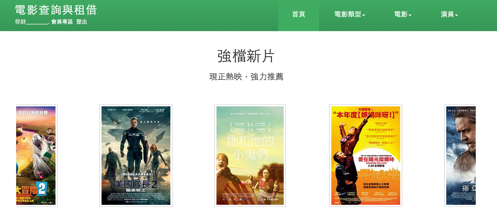
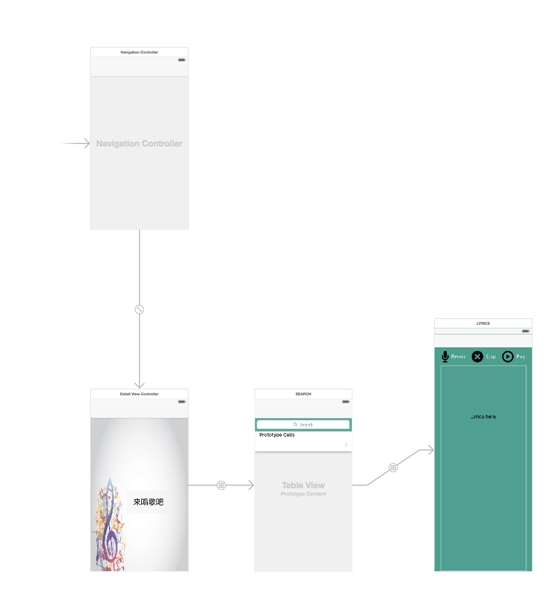
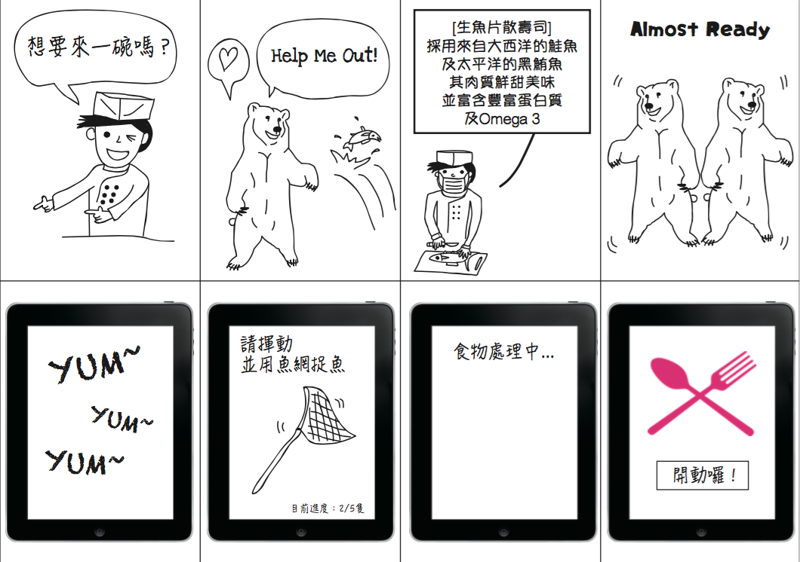

In order to display our relational database result,
we are asked to set up our own website.
I used Gliffy as a tool for making my wireframe diagram,
according to the function(What should the website do?),
appearance(Where should I put my information?/Where should I put the function button) and the flow.
With the wireframe, I can clearly know the framework of the website
and also easy to modify once i found any problem before setting up my website.
The following is the complete website:

I’m a beginner for building up IOS APP.
Using Xcode to build up the app.
I made a karaoke app to help others release stress.
With the MVC concept of Xcode, I first dragged out some tables, buttons and text fields to design my interface.
I see it as a wireframe or a storyboard to help me with my further design.
Then also set up the flow to clarify the order.
In the end, I’ll write the code to control the event.
The following is the Storyboard of my IOS APP:

I used 3D Hologram to do the marketing for a restaurant.
I created a story using 3D Hologram and my app could interact with it.
I used online cell phone mockup to draw my storyboard and match the story.
Step by Step and also arranged the UI flow.
The following is the Storyboard of my interactive app:

About testing the design…
I feel bad to say that I don’t have much testing experience for the design.
But every time I complete my semifinished design, first, I see myself as a user, not a designer or developer,
and try out the function to see if it works or works smoothly.
Then I asked for volunteers to test my design.
For receiving some feedbacks, I can improve my prototype.